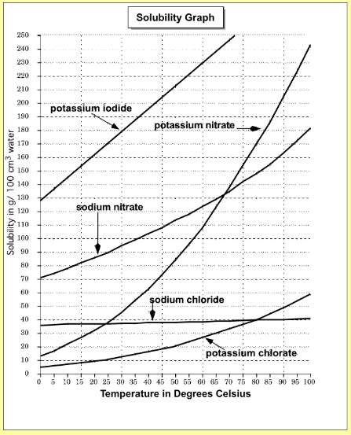

The solubility rules and precipitation table are in the Data section at the end of the paper.
Questions 1–9
What is the effect of adding a surfactant to droplets of liquid?
Which statement about water is correct?
Hydrogen bonds act between water molecules; the atoms within a molecule are held by covalent bonds. Water expands when it freezes.
A property of acids is that they:
Use this table of indicators for Questions 4 and 5.
| Indicator | Colour at low pH | pH range | Colour at high pH |
|---|---|---|---|
| Methyl orange | red | 3.2–4.4 | yellow |
| Methyl red | red | 4.2–6.3 | yellow |
| Phenolphthalein | colourless | 8.2–10.0 | pink/violet |
| Bromophenol blue | yellow | 2.8–4.6 | blue |
Methyl red was added to an unknown solution and it turned yellow. What could the pH of the unknown solution be?
Two indicators were added to an unknown solution. Methyl orange turned the solution yellow, and phenolphthalein remained colourless. What is the possible pH range of the unknown solution?
Yellow in methyl orange means the pH is above 4.4; colourless in phenolphthalein means it is below 8.2.
Complete the table. (Type formulas with ordinary numbers, e.g. H2O.)
| Name of acid or base | Formula |
|---|---|
| Nitric acid | |
| H2SO4 | |
| Calcium hydroxide | |
| NaHCO3 |
Complete and balance the following equations.
- HNO3 + Al2O3 → + H2O
- H2SO4 + Zn(OH)2 → + H2O
- HCl + CaCO3 → + H2O +
- HNO3 + KHCO3 → + H2O +
NaI(aq) + AgNO3(aq) → AgI(s) + NaNO3(aq) is a precipitation reaction. Which ion acts as a spectator ion in this reaction?
Spectator ions stay dissolved and take no part in the reaction. (NO3− is also a spectator.) NaNO3 is a compound, not an ion.
Use the solubility rules to predict whether each pair will form a precipitate, and write the formula of any precipitate formed. (Leave the formula blank if there is none.)
| Reactants | Precipitate? | Precipitate formula |
|---|---|---|
| CaS + Na2SO4 | ||
| KCl + Pb(OH)2 | ||
| NH4NO3 + Li2SO4 | none |
Questions 10–12
Question 10 (6 marks)
The graph below shows that the solubility of substances depends on temperature. Solids tend to become more soluble with temperature, while gases mostly become less soluble.

Use the graph to find the mass of sodium nitrate that will dissolve in 100 cm3 of water at 45 °C.
Which salt is least soluble at 75 °C?
Are the following solutions saturated, unsaturated or supersaturated?
- 120 g of sodium nitrate in 100 cm3 of water at 45 °C:
ii. 90 g of potassium iodide in 50 cm3 of water at 30 °C:
iii. 45 g of potassium nitrate in 200 cm3 of water at 20 °C:
- Only about 109 g can dissolve at 45 °C. ii. 90 g in 50 cm3 is 180 g per 100 cm3, which is on the curve at 30 °C. iii. 45 g in 200 cm3 is 22.5 g per 100 cm3, well below the curve (about 32 g at 20 °C).
10 g of potassium chlorate is dissolved in 100 cm3 of water at 30 °C. How much extra potassium chlorate must be added to make a saturated solution at 65 °C?
At 65 °C, 100 cm3 of water holds about 30 g, so 30 − 10 = 20 g must be added.
A student carried out some flame tests: they dipped a nichrome loop into a solution of each metal cation and held it in a Bunsen burner flame. What colour would you expect for each?
Sodium:
Lithium:
Copper(II):
Question 12 (3 marks)
Use the precipitation table in the Data section. Several tests were done on an unknown solution to find the cation and anion it contains:
- When sodium hydroxide was added, it turned blue.
- When lead(II) nitrate was added, it went white.
- When silver nitrate was added, no precipitate was seen.
Cation:
Anion:
Name of the ionic compound:
Formula:
A blue precipitate with hydroxide means Cu2+. A white precipitate with lead(II) means sulfate or carbonate, but carbonate would also precipitate with silver, so it must be sulfate.
If aqueous calcium nitrate, Ca(NO3)2, was added to the unknown solution from part (a), what would be the formula of the precipitate that forms?
CuSO4(aq) + Ca(NO3)2(aq) → Cu(NO3)2(aq) + CaSO4(s). Calcium sulfate is an exception to the "sulfates are soluble" rule.
Data: solubility rules and precipitation table
Soluble compounds
| Compounds containing | Exceptions |
|---|---|
| Li+, Na+, K+ | none |
| Nitrate (NO3−) | none |
| Ammonium (NH4+) | none |
| Chloride, bromide, iodide (Cl−, Br−, I−) | Ag+, Pb2+ |
| Sulfate (SO42−) | Ba2+, Pb2+, Ca2+, Ag+ |
Insoluble compounds
| Compounds containing | Exceptions |
|---|---|
| Carbonate (CO32−) | Li+, Na+, K+, NH4+ |
| Phosphate (PO43−) | Li+, Na+, K+, NH4+ |
| Hydroxide (OH−) | Li+, Na+, K+, NH4+ |
| Sulfide (S2−) | Li+, Na+, K+, NH4+, Ca2+, Ba2+ |
Precipitation table (colour of any precipitate formed; a blank means no precipitate, i.e. a clear solution. "Cloudy" means the precipitate stays suspended in the water.)
| Cation | NO3− | SO42− | CO32− | Cl− | I− | Br− | PO43− | OH− | OH− with NH3 |
|---|---|---|---|---|---|---|---|---|---|
| Na+ | |||||||||
| K+ | |||||||||
| Ba2+ | white | white | white | cloudy | |||||
| Ca2+ | cloudy white | cloudy | cloudy | ||||||
| Cr3+ | grey | cloudy green | smoky green | ||||||
| Al3+ | cloudy | cloudy | cloudy (light) | cloudy | |||||
| Zn2+ | cloudy | dense cloudy | cloudy | ||||||
| Fe2+ | grey/green | grey | green | light green | |||||
| Fe3+ | light yellow | brown | brown | ||||||
| Cu2+ | light blue | mustard | blue | blue | royal blue | ||||
| Pb2+ | white | white | yellow | cloudy | white | white | white | ||
| Ag+ | light brown | cloudy | light yellow | cloudy | light brown | brown |